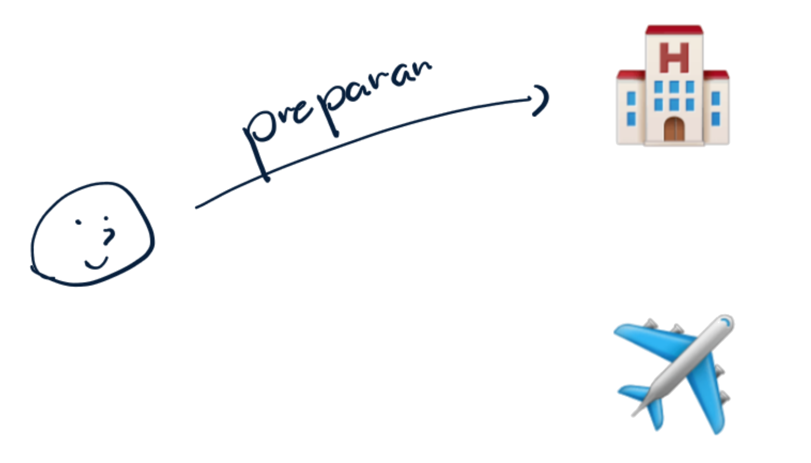
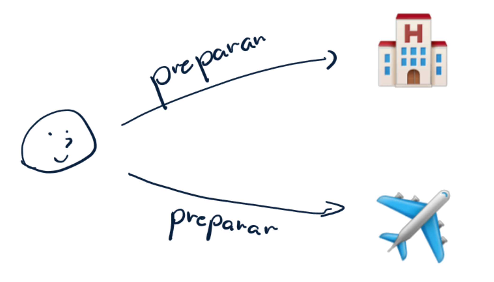
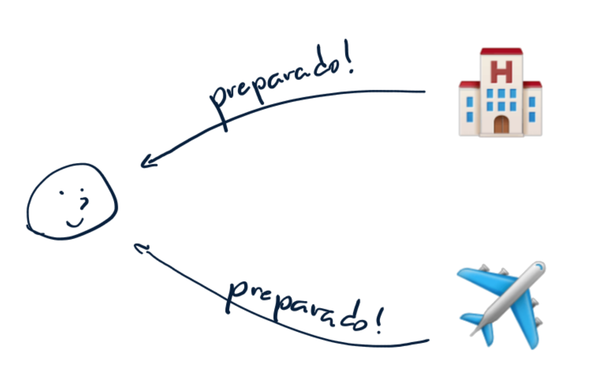
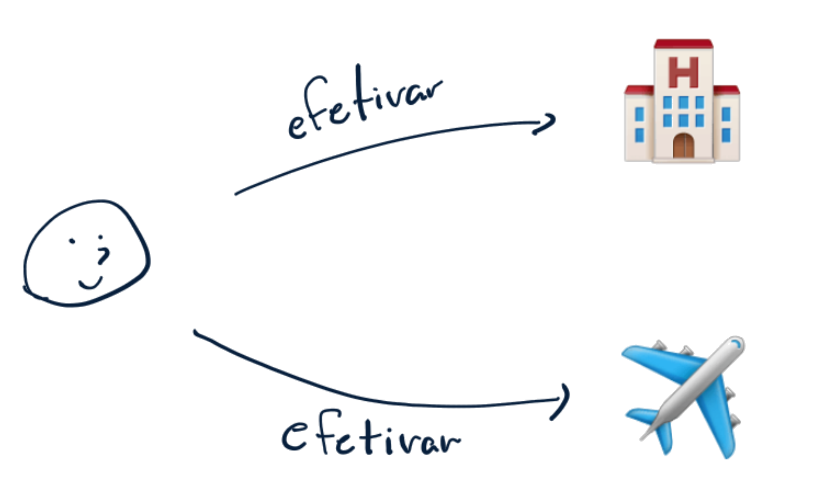
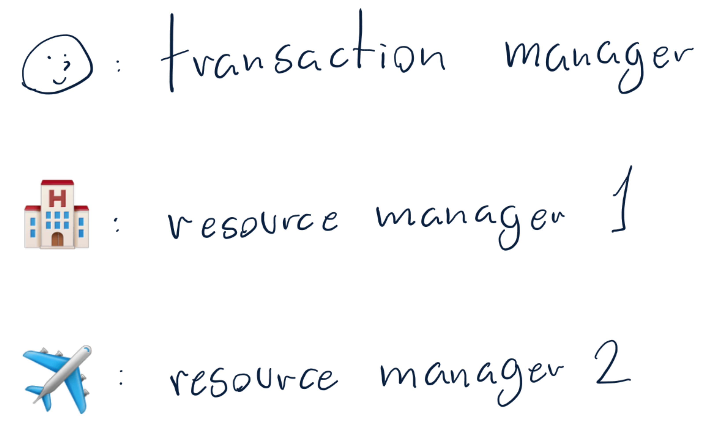

Tomas está planejando uma viagem e precisa de hospedagem e passagens aéreas.
Entretando, Tomas está com medo de reservar o hotel e acabar não conseguindo passagem. Ou pior, comprar as passagens e acabar não conseguindo um hotel pra ficar.
Tomas tem um plano! Primeiro, ele abre o site do hotel e inicia uma reserva. Esses sites normalmente seguram as reservas iniciadas por alguns minutos para você preencher seus dados de pagamento, então existe uma certa garantia de que a hospedagem será do Tomas se ele confirmar a tempo.
Depois, ele muda de aba para o site da companhia aérea e inicia a reserva do voo.
PS: Para efeitos desse exemplo, vamos considerar que os sites de companhia aérea funcionam decentemente.
Agora que o Tomas sabe que tem as passagens e hospedagem que precisa, ele inicia as confirmações.
Em seguida, ele confirma as passagens aéreas.
Assumindo que:
Os sites de hotel e passagens aéreas vão manter disponíveis os itens selecionados enquanto a reserva não expirar
O Tomas tem tempo suficiente para confirmar as duas reservas antes de alguma delas expirarem
Podemos garantir que:
Podemos dizer que o protocolo do Tomas é uma efetivação em duas fases.
Primeiro, o Tomas requisita uma preparação do site do hotel. Preparar aqui significa:
As partes importantes são:

Novamente, as partes importantes são:

Para finalizar a primeira fase, o Tomas deve receber a confirmação de que as preparações foram positivas.

Na segunda fase, considerando que as preparações foram positivas, basta que o Tomas confirme todas as reservas.


Queremos garantir que:
Pensando que podemos ter vários outros resource managers, podemos generalizar isso como:
Na realidade de sistemas distribuídos, é importante considerar que esse conhecimento está separado
Operações atômicas são aquelas que podem executar sem "interrupção" de outro processo.
São aquelas que conseguimos executar de certeza, não importa o que aconteça com os outros fatores.
Exemplo de operações atômicas:
Exemplo de operação não atômica:
Comprar uma passagem aérea
Uma ação vai sempre representar uma operação atômica
PS: No trabalho 1, o nível de abstração mais apropriado é uma transição por turno.
Um exemplo de aplicação é para escrever dados em múltiplos bancos de dados diferentes, a fim de manter consistência de dados entre eles.
Semelhante ao exemplo em (HOWARD, 2016)
Já usei em uma migração de bancos de dados